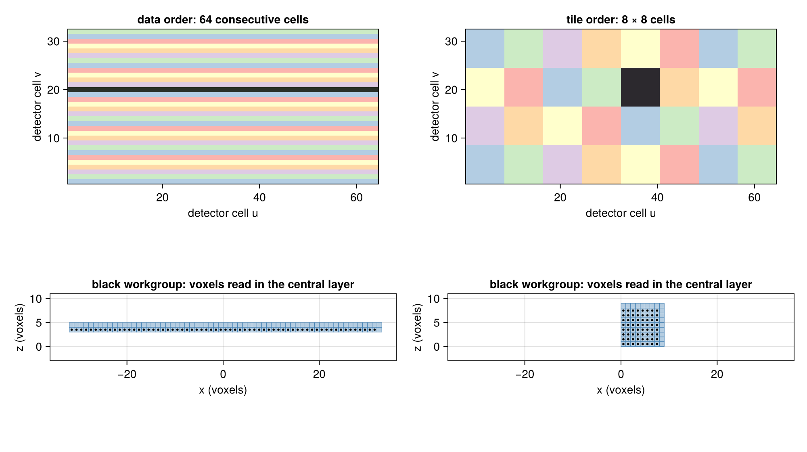

Workgroups, Ray Order and Runs of Voxels
The ray-driven projectors (SiddonProjector, JosephProjector, DistanceDrivenProjector) run one thread (a work-item in the terms of KernelAbstractions.jl) per data element, which traces its ray; the VoxelDrivenProjector runs one thread per voxel or run of voxels (see Runs of voxels). Threads are launched in workgroups, groups of threads that run together on the same part of the device (thread blocks in CUDA; see the terminology of KernelAbstractions.jl). How large the workgroups are, and how the work is laid out over the threads, changes the speed; the results stay the same up to rounding (see Effect). These choices are not part of Siddon's Method or Joseph's Method. This page describes what CTOperators.jl does by default and how to change it with a LaunchConfig.
using CTOperatorsRay order
Projection data of a detector geometry is stored with the detector cell u varying fastest, then v, then the view. In data order, thread j traces ray j, so a workgroup of 64 threads traces 64 consecutive cells of a detector row. In tile order, the threads of a workgroup trace a square of detector cells instead, for example 8 × 8 cells for 64 threads.
The figure shows both for one view of a cone-beam scan (a 64 × 32 detector, an image of 64³ voxels). Top: the detector cells, colored by the workgroup that traces them (the colors repeat); one workgroup is black. In data order, a workgroup covers a whole detector row here because the detector is 64 cells wide. Bottom: the rays of the black workgroup in the central layer of the image, perpendicular to the principal axis of the rays (see System Matrix; Joseph's method steps through such layers). The dots are where the rays cross the layer, the shaded squares the voxels Joseph's method interpolates from. In data order the rays read a long, thin strip of voxels, in tile order a compact patch.

Tiles only apply to detector geometries. The rays of a RayList are always traced in data order, since neighboring entries of a list need not be neighboring rays.
Effect
For the ray-driven projectors the forward projection gives identical results in every configuration. The back projection gives the same results up to rounding, because its atomic additions into the image happen in a different order.
The speed depends on the device and the problem; measurements on an AMD Radeon RX 7900 XT are in our benchmarks.
Configuration
Without the keyword launch (or with LaunchConfig()), a projector uses the defaults of the device it is on:
- ray-driven projectors on GPUs: tiles of 8 × 8 detector cells, one tile per workgroup (64 threads);
- ray-driven projectors on the CPU: data order, and the workgroup size KernelAbstractions.jl chooses;
- the voxel-driven projector: see Runs of voxels.
A projector moved with adapt switches to the defaults of its new device. The tile size was chosen on the GPU of our benchmarks; on other GPUs it is a starting point.
To choose the settings yourself, pass a LaunchConfig with the keyword launch. It applies to the forward and the back projection, on any device, and projectors made from the projector with subset or adapt keep it:
launch = LaunchConfig(; layout=(16, 8))
op = JosephProjector(image, geometry; storage=CuArray, launch)The layout says how the work is laid out over the threads; for the ray-driven projectors it is the tile, (tu, tv) cells, and layout=() is data order. A field left at nothing is derived: the layout is the device's default, and the workgroup size is one tile per workgroup (tu * tv threads, 128 in the example) if the device allows workgroups that large; otherwise, and in data order, it is the size KernelAbstractions.jl chooses. A workgroup size that is given is used as it is: with a smaller one several workgroups share a tile, and one larger than the device or the kernel allows gives an error when the projector runs (from KernelAbstractions.jl or the GPU package).
The best settings depend on the device and the problem. To find them, time a few combinations on a problem of the size you need (image, geometry and an image x on the device as in Run on a GPU):
using CUDA
for workgroupsize in (nothing, 32, 64, 128, 256), layout in ((), (8, 4), (8, 8), (16, 4))
op = JosephProjector(image, geometry; storage=CuArray, launch=LaunchConfig(; workgroupsize, layout))
y = op * x # compile
adjoint(op) * y
tf = CUDA.@elapsed op * x
tb = CUDA.@elapsed adjoint(op) * y
println((workgroupsize, layout), ": forward ", round(1000tf; digits=1), " ms, back ",
round(1000tb; digits=1), " ms")
endRuns of voxels
The VoxelDrivenProjector (and FDK, which back projects with it) runs one thread per voxel or per run of voxels, not per ray, so its layout means something else: layout=(R,) lets every thread take a run of R neighboring voxels along x instead of one; the last run of a row may be shorter, and layout=() is one voxel per thread. A thread loops over the views and, within each view, over the voxels of its run. For ConeBeam and ParallelBeam geometries the voxels of a run do not each start from scratch: where a voxel lands on the detector follows from where its neighbor lands by adding a step that is the same for the whole run in that view (see Voxel-Driven Method); for an ArcConeBeam every voxel of the run is projected on its own. The result is the same up to rounding.
Without launch, the voxel-driven projector takes runs of 8 voxels on the CPU and runs of 2 on GPUs, in workgroups of the size KernelAbstractions.jl chooses (a run is work per thread, not a number of threads). The run lengths were chosen on one CPU and on the GPU of our benchmarks (the measurements are in benchmark/README.md of the repository, made with benchmark/tune_launch.jl, which also times them on other devices); on other devices they are a starting point. Runs of 16 voxels, for the projector and for FDK:
launch = LaunchConfig(; layout=(16,))
op = VoxelDrivenProjector(image, geometry; launch)
plan = FDK(image, geometry; launch)A layout of another length gives an ArgumentError, as does a run for a ray-driven projector:
JosephProjector(image, geometry; launch) # ArgumentError: the layout must be () or (tu, tv)This page was generated using Literate.jl.